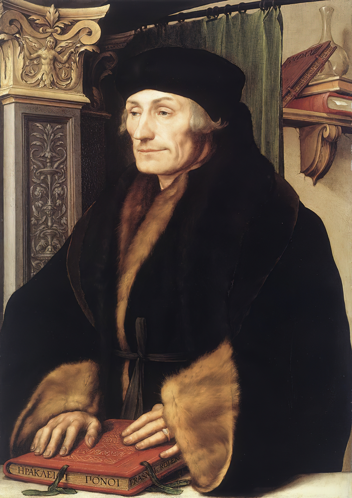
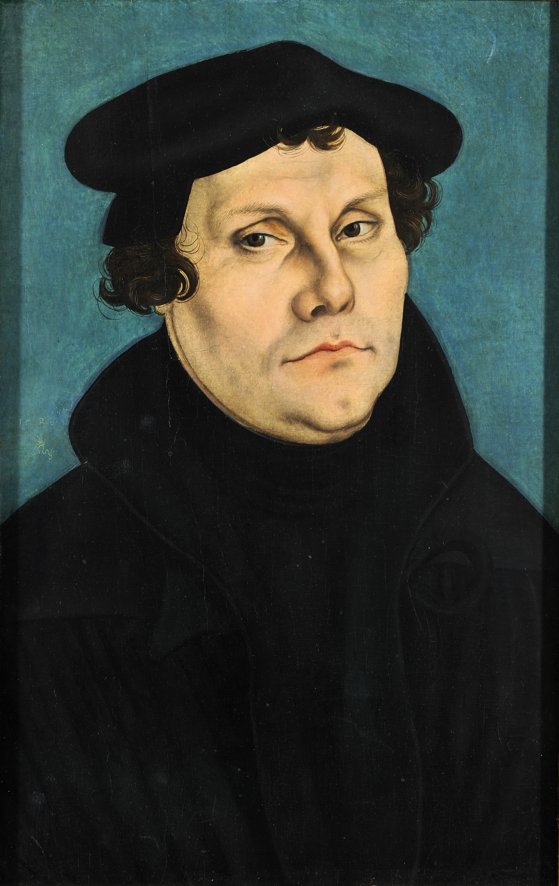

Religion
The teaching and study of Latin and Greek made scholars rethink the phrases in the Bible, which may have been mis-translated. The teaching of Aristotrolian logic encouraged those in the church to spend less time studying the Bible and more time investigating the human condition, or embracing humanism.One of the people rooting for it was Erasmus of Rotterdam, who advocated for a middle of the road route between Ancient Pagans and Catholics.He also translated the New Testament, and some Pagan texts, hiring editors, proofreaders, and ghostwriters to check over his work.Despite being critical of the Catholic church, he stayed loyal to them during the protestant reformation, also critical of Martin Luther's teachings.
Martin Luther was a priest that called for the reformation of the church after releasing its corruption. One of the doctrines that he challenged was how the Catholic Church established the pope as the ultimate spiritual authority, not the Bible. Another was how the Church sold indulgences, or told people to pay money to forgive their sins. The protestant reformation officially started on October 31st, 1517, when he nail his 95 theses onto the door of Castle Church in Wittenberg, Germany
Holbein, HansErasmus.1523.National Gallery,https://www.wga.hu/frames-e.html?/html/h/holbein/hans_y/1525/08erasmu.html, Cranach, Lucas, Martin Luther.1528.Colburg Fortress ,http://lucascranach.org/DE_KSVC_M417